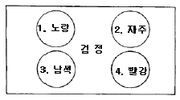
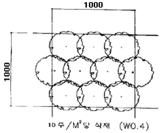
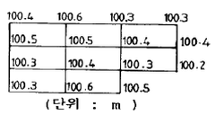
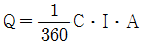
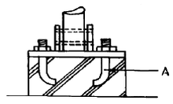
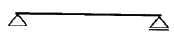
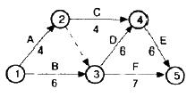
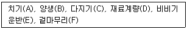
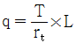

조경산업기사 (2007-09-02 기출문제)
1과목: 조경계획 및 설계
1. 축척 1 : 3000 인 도면에 도시된 길이 10cm ×10cm 인 정사각형의 실제 면적은?
- 3 ha
- 30 ha
- 9 ha
- 90 ha
(정답률: 72%)

2. BC 5세기에 장방향의 격자형 도시계획안을 제창한 최초의 도시 계획가는?
- 아리스토텔레스(Aristoteles)
- 히포데이무스(Hippodamus)
- 비트리비우스(Vitrivius)
- 플라토(Plato)
(정답률: 78%)
3. 연못 속에 봉래산(蓬萊山)이란 선산도(仙山島)를 만들어 놓은 곳은?
- 주문왕(周文王)의 영대(靈臺)와 못(池)
- 진시황(秦始皇)의 난지궁(蘭池宮)과 못(池)
- 당현종(唐玄宗)의 홍경궁(鬨慶宮)과 용지(龍池)
- 난정(蘭亭)의 유상곡수(流觴曲水)
(정답률: 79%)
4. 정형식 정원의 배치수법으로 틀린 것은?
- 자연미 보다는 인공미에 치중한다.
- 통경선(Vista)의 수법을 많이 활용한다.
- 대칭미를 살려서 배치한다.
- 수목의 노고는 낮은 것보다 높은 것을 많이 이용한다.
(정답률: 70%)
5. 다음 중 기본계획도서(基本計劃圖書)에 해당하지 않는 것은?
- 개략 공사비 산출서
- 마스테플렌
- 현황 분석도
- 시방서
(정답률: 65%)
6. 설계를 함에 있어서 단순길이의 단순한 배수보다는 황금비례를 이용함이 바람직하다고 주장한 사람은?
- 페흐너(Fechner)
- 케빈린치(K.Linch)
- 르 꼬르뷰지에(Le Corbusier)
- 가렛 엑크보(G.Eckbo)
(정답률: 88%)
7. 문화재 공원의 기능과 가장 관계가 적은 것은?
- 문화재 보존 기능
- 교학적(敎學的) 기능
- 휴식 기능
- 동적 레크레이션 기능
(정답률: 75%)
8. 남송(南宋)시대 32개 명원(名園)을 소개한 정원의 관계 서적은?
- 원야
- 낙양명원기
- 오흥원림기
- 장물지
(정답률: 63%)
9. 다음 중 미들홀 또는 롱홀의 티이 그라운드에서 약 210 ~ 230m 지점에 자리 잡아 골프 경기의 장애물로 설치되는 것은?
- 훼이웨이 벙커
- 그린사이드 벙커
- 어프로우치
- 그린
(정답률: 74%)
10. 조경계획 및 설계의 일반적인 과정(Process)을 나열한 것 중 순서로 가장 적합한 것은?
- 기본전제 → 자료수집 → 자료분석 → 종합 → 기본구상 → 대안 → 기본계획 → 세부설계
- 기본전제 → 자료수집 → 종합 → 자료분석 → 대안 → 기본구상 → 기본계획 → 세부설계
- 자료수집 → 기본전제 → 자료분석 → 종합 → 대안 → 기본구상 → 기본계획 → 세부설계
- 기본전제 → 자료수집 → 자료분석 → 종합 → 대안 → 기본구상 → 기본계획 → 세부설계
(정답률: 50%)
11. 다음 검정 바탕에 놓은 동그란 원 안의 색 중에서 팽창성이 가장 강하게 느껴지는 색은?

- 1
- 2
- 3
- 4
(정답률: 63%)
12. 다음 중 공장조경의 수목선택의 구비조건이 아닌 것은?
- 지하고가 높은 수종
- 공해에 강한 수종
- 수목의 생장속도가 빠른 수종
- 척박한 땅에서도 생육이 강한 수종
(정답률: 95%)
13. 자연공원의 용도지구 가운데 가장 엄격하게 보호되어야 할 곳은?
- 공원자연환경지구
- 공원밀집마을지구
- 공원자연보존지구
- 공원집단시설지구
(정답률: 86%)
14. 아미산(峨眉山) 조경 유적은 다음 중 어느 곳에 있는가?
- 경주 안압지(雁鴨池)
- 경복궁 교태전(交泰殿) 후원
- 창덕궁 대조전(大造殿) 후원
- 경복궁 건청궁(乾淸宮) 후원
(정답률: 74%)
15. 우리나라 도시공원 및 녹지 등에 관한 법규에서 규정하고 있는 도시공원의 이용권에 있어서 도보권의 개념 범위는?
- 100 m 이내
- 500 m 이내
- 1000 m 이내
- 200 m 이내
(정답률: 44%)
16. 옥외 휴양 행동을 좌우하는 지배 인자로서 영향력이 가장 약한 기상 조사 항목은?
- 월평균 강우량
- 기온의 변동량(최고 최저 기온)
- 강우 일수
- 생물 기후의 각종 데이터(벚꽃의 개화일 등)
(정답률: 62%)
17. 유원지의 시설물, 배치형태는 크게 병렬형, 임의형, 수지상형의 3가지로 분류하는데 이 중 임의형의 특징이라고 할 수 있는 것은?
- 대규모 집단의 이용과 고밀도 이용에 바람직한 방법으로 경관적으로 단순한 평탄면에 적합하다.
- 경관이 단순하고 집합적이며 관리가 용이하다.
- 가족 단위의 이용에 적합하고 복잡한 기복의 지형에 좋으며 경관상 변화가 다채롭다.
- 개인적인 이용에 적합하고 복잡한 지형에 이용 자연 경관 보존을 쉽게 할 수 있다.
(정답률: 48%)
18. 자연공원의 집단시설지구 내 토지이용계획시 고려해야 할 사항으로 잘못 설명된 것은?
- 진입로의 입구에 광장과 주차장을 배치한다.
- 동선의 흐름이 원활한 지역에 상업시설을 배치한다.
- 지구의 중앙부에 숙박지역을 배치한다.
- 상업시설 및 광장 중간에 공공시설지역을 배치한다.
(정답률: 92%)
19. 다음 중 환경조각(Envirommenetal Sculpture)에서 고려되어야 할 사항 중 가장 부적합한 것은?
- 공공성(公共性)
- 기능성(技能性)
- 개인성(個人性)
- 예술성(藝術性)
(정답률: 81%)
20. 스페인의 알함브라 궁원 안에 있는 “사자의 파티오”에 관한 설명으로 틀린 것은?
- 왕의 사정원(私庭園) 이다.
- 파티오의 중심에는 싸이프레스의 나무가 식재 되어 있다.
- 주랑에 의해 둘러 싸여 있다.
- 14세기에 마호멧 5세가 조성하였다고 한다.
(정답률: 50%)
2과목: 조경식재
21. 방품림의 구조를 설명한 것 중 틀린 것은?
- 방품림의 1.5 ~ 2.0m 의 간격을 가진 정삼각형 식재로 한다.
- 수림대의 길이는 수고와는 관계없이 필요한 만큼으로 한다.
- 5 ~ 7 열의 열식으로 한다.
- 폭은 10 ~ 20m 정도로 한다.
(정답률: 58%)
22. 조경식물의 일반적인 선정기준이 아닌 것은?
- 이식(移植)이 용이한 식물
- 미적 가치가 있는 식물
- 식이성(食餌性) 식물
- 시장이나 묘포(苗圃)에서 구입하기 용이한 식물
(정답률: 67%)
23. 토양단면(soil profile) 중 미생물과 식물활동이 왕성하고 낙엽의 분해 생산물이 침투되어 흑갈색을 띄며, 기후, 식생 등의 영향을 직접 받아 가용성염기류가 아래층으로 이동하는 토양 단면층은?
- 유기물층(O층)
- 용탈층(A층)
- 집적층(B층)
- 모재층(C층)
(정답률: 67%)
24. 다음 수목의 식재환경 중 음수(陰樹)가 생장할 수 있는 광량(光量)은 전수광량(全受光量)의 몇 % 내외인가?
- 5%
- 5%
- 25%
- 50%
(정답률: 50%)
25. 상록활엽관목으로 우리나라에 1과(科), 1속(屬), 1종(種)에 해당되는 수목은?
- Pittosporum tobita AITON
- Viburnum awabuki K.KOCH
- Ternstroemia japonica THUNB
- Camellia japonica L.
(정답률: 29%)
26. 낙엽수의 이식 적기 설명으로 틀린 것은?
- 겨울에 추위가 심한 지방은 땅이 녹은 직후
- 새로운 뿌리가 움직이기 시작한 뒤 새순이 움 틈
- 가을에 낙엽이 지고 다음해 봄에 새로운 뿌리가 움직이기 시작할 때까지
- 새순이 자라나는 5 ~ 6월
(정답률: 35%)
27. 다음 수목 중 주로 잎을 관상하기 위한 수종으로만 짝지어진 것은?
- 사철나무, 앵두나무
- 라일락, 마로니에
- 아마릴리스, 맥문동
- 고무나무, 소철
(정답률: 58%)
28. 양토에서 잘 자라고 뿌리가 얕게 뻗는 양수인 만경류로만 짝지어진 것은?
- 능소화, 등나무, 노박덩굴
- 인동덩굴, 장미, 해당화
- 백당나무, 송악, 나무수국
- 병꽃나무, 청미래덩굴, 다래나무
(정답률: 67%)
29. 다음 중 천근성(淺根性) 수종으로만 짝지워진 것은?
- 독일가문비, 매화나무
- 백목련, 수양벚나무
- 단풍나무, 은행나무
- 모과나무, 칠엽수
(정답률: 50%)
30. 굴취 공사용 수목의 규격 표시 기준이 바르게 된 것은?
- 아왜나무 : H2.5 × W1.0
- 은행나무 : H4.0 × R8
- 홍단풍 : H2.5 × B8
- 조팝나무 : H1.0 × L0.2
(정답률: 34%)
31. 자연풍경식재의 기본패턴 중 랜덤식재(random planting) 설명으로 틀린 것은?
- 규격이 같지 않은 수목을 일정간격과 직선이 되지 않도록 심는 방법
- 아름다운 정원을 꾸미기 위하여 규격과 형상이 일정한 것을 삼각형으로 식재하는 방법
- 삼각망을 순차적으로 확대해 가는 수법으로 광대한 면적에 수목을 배치하는 방법
- 자연적인 수림을 만들기 위하여 크고 작은 나무가 같지 않은 간격으로 전후좌우 배치되는 방법
(정답률: 65%)
32. 근린공워 내에 그림과 같은 관목류를 식재하고자 한다. 몇 주를 식재해야 하는가? (단, 식재지역 : 250m2, 수종 : 겹철쭉, 규격 : H0.6 × W0.4)

- 2250 주
- 2500 주
- 5250 주
- 5500 주
(정답률: 61%)
33. 다음 중 자연풍경식 식재 방법인 것은?
- 열식
- 교호식재
- 대식
- 부등변삼각형식재
(정답률: 69%)
34. 다음 수목군 중 성목시 백색계통의 수피 색깔을 가진 것만으로 짝지어진 것은?
- 식나무, 벽오등
- 주목, 잣나무
- 자작나무, 백송
- 가문비나무, 히말라야시더
(정답률: 80%)
35. 터널의 입구나 출입구에 명암순응식재를 할 때 터널입구를 기점으로 하여 얼마만큼의 구간에 교목으로 열식(列植)하여야 하는가?
- 50 ~ 100m
- 200 ~ 300m
- 400 ~ 500m
- 600 ~ 700m
(정답률: 66%)
36. 다음 중 상록성 식물이 아닌 것은?
- 맥문동
- 자금우
- 족제비고사리
- 비비추
(정답률: 42%)
37. 황폐지(척박지)에 수림조성을 하고자 할 때 가장 부적합한 수종은?
- 졸참나무
- 오리나무
- 싸리나무
- 배롱나무
(정답률: 53%)
38. 식물의 기상학적 이용이 아닌 것은?
- 태양복사열 조절
- 바람의 조절
- 공간 분할
- 온도 조절
(정답률: 53%)
39. 다음 중 이식하기 쉬우며 생장속도가 가장 빠른 수목은?
- 백목련
- 호두나무
- 자작나무
- 메타세콰이아
(정답률: 58%)
40. 다음 중 수목과 학명의 연결이 틀린 것은?
- 옥매 : Prunus glandulosa
- 무궁화 : Hibiscus syriacus
- 개나리 : Forsythia Koreana
- 진달래 : Rhododendron yedoense
(정답률: 48%)
3과목: 조경시공
41. 시공계획의 진행 순서로 가장 적합한 것은?
- 사전조사 → 설계서 검토 → 공정계획 → 실행예산 작성
- 사전조사 → 설계서 검토 → 실행예산 작성 → 공정계획
- 설계서 검토 → 공정계획 → 사전조사 → 실행예산 작성
- 설계서 검토 → 실행예산 작성 → 사전조사 → 공정계획
(정답률: 45%)
42. 다음 중 비철금속 재료가 아닌 것은?
- 철근
- 동
- 알루미늄
- 아연
(정답률: 67%)
43. 다음 중 입찰자의 시공경험, 기술능력, 경영상태, 신인도 등을 종합적으로 검토하여 가장 효율적으로 공사를 수행할 수 있는 업체에 입찰자격을 부여하는 입찰 방식은?
- PQ제도
- 부대입찰제도
- 대안입찰제도
- 수의계약
(정답률: 48%)
44. 등고선에서 간곡선(間曲線)의 설명으로 옳은 것은?
- 주곡선 간격의 1/2의 하며 주곡선 만으로 지형의 상태를 명시할 수 없을 때 사용한다.
- 조곡선 간격의 1/2로 하며 지형이 복잡한 경우에 표시한다.
- 주곡선 5개마다 읽기 쉽도록 굵게 표시한 곡선을 말한다.
- 지형을 표시하는데 기본이 되는 등고선이다.
(정답률: 58%)
45. 다음과 같은 높이를 갖는 지형을 100m 높이로 정지 작업할 때 절취해야 할 토량은? (단, 하나의 기본 구형은 5m×10m 이다.)

- 65m3
- 98m3
- 126m3
- 165m3
(정답률: 37%)
46. 벽돌쌓기 공사에 관한 설명 중 틀린 것은?
- 벽돌이 부착된 불순물은 제거하고 쌓기 전에 물 축이기를 한다.
- 착수 전에 벽돌나누기를 하고 세로줄눈은 특별히 정한 바가 없는 한 통줄눈이 되지 않도록 쌓는다.
- 1일 쌓기 높이는 1.5m 이상으로 하고, 다음 날 이어서 쌓는 것이 경제적인 시공이다.
- 줄눈 모르타르는 접합면 전체에 고루 배분되도록 하고 줄눈 폭은 특별히 정하지 않는 한 10mm 로 한다.
(정답률: 79%)
47. 인력 터파기 표준 품셈에 관한 설명으로 틀린 것은?
- 터파기 깊이가 길어 질수록 품을 감소한다.
- 협소한 독립기초의 터를 팔 때에는 품을 50%까지 가산할 수 있다.
- m3당 보통인부의 터파기 품이 설정되어 있다.
- 현장 내에서 소운반하여 깔고 고르는 잔토처리는 m3당 0.2인을 별도 계상한다.
(정답률: 65%)
48. 평판측량시 평판의 표정(標定) 조건이 아닌 것은?
- 정치(整置)
- 치심(致心)
- 교회(交會)
- 정위(定位)
(정답률: 48%)
49. 우수유출량의 계산식에서

에서 “I”는 무엇을 의미하는가?- 유출계수
- 배수면적
- 강우강도
- 강우용량
(정답률: 66%)
50. 다음 그림에서 A 는 무엇을 나타내는가?

- 철근
- 앵커볼트
- 와이어 메쉬
- 너트
(정답률: 75%)
51. 수평 구조체의 부재 중 아래 그림의 명칭은?

- 단순보(simple beam)
- 캔틸레버보(cantilever)
- 내민보(pverhanging beam)
- 고정보(fixed beam)
(정답률: 66%)
52. 경화시간과 수화작용(水和作用)이 빨라 조기 강도가 크고, 발열량이 많아 한지(寒地), 긴급공사가 가장 적합한 시멘트는?
- 포틀랜드 시멘트
- 조강 포틀랜드 시멘트
- 중용열 포틀랜드 시멘트
- 실리카 시멘트
(정답률: 70%)
53. 높이 1.6m, 길이 5m, 두께 19cm 의 벽돌 담장을 설치하려 한다. 소요되는 벽돌은 몇 매인가? (단, 표준형 벽돌 1.0B 쌓기로 하며, 149매/m2를 적용하고, 할증률 3%를 고려한다.)
- 약 600매
- 약 618매
- 약 1192매
- 약 1228매
(정답률: 48%)
54. 식생(植生)의 생육이 적당치 않고 용수(湧水)가 있는 절토비탈면이 강우로 자주 유실되어 유지관리가 어려운 곳에 가장 적합한 비탈면 보호 공법은? (단, 비탈면 구배 1 : 0.8 이하의 완구배 비탈면에 적용함)
- 콘크리트 격자형 블록 및 심줄박기공법
- 편책공법
- 시멘트모르타르 및 콘킈트 뿜어 붙이기공법
- 낙석방지망공법
(정답률: 63%)
55. 다음 콘크리트 워커빌리티(Workability)에 대한 설명으로 틀린 것은?
- 시멘트의 종류, 분말도, 사용량이 영향을 미친다.
- 시멘트의 양이 많아지면 워커빌리티가 좋아진다.
- 골재의 입자가 모난 것이나 납작한 것은 워커빌리티를 개선한다.
- 시공연도를 나타내는 것이다.
(정답률: 50%)
56. 다음 공정표의 작업을 수행하는데 소요되는 CㆍP의 공사일수는?

- 13일
- 14일
- 6일
- 18일
(정답률: 57%)
57. 관개시설에 관한 설명 중 틀린 것은?
- 스프링클러는 고정식과 회전식이 있다.
- 팝업 스프링클러는 물 공급이 중단되면 원위치로 돌아간다.
- 에미터(emitter)는 스프링클러보다 높은 압력이 필요하다.
- 회전식 스프링클러는 넓은 잔디지역에 사용하는 것이 효과적이다.
(정답률: 73%)
58. 실제 2점간의 거리가 200m 일 때 도면의 거리가 4mm로 나타날 경우 축척은 얼마인가?
- 1/20000
- 1/30000
- 1/50000
- 1/60000
(정답률: 65%)
59. 다음 보기 중 콘크리트공사의 작업 순서로 옳은 것은?

- B → A → C → E → D → F
- D → E → A → C → B → F
- D → C → E → A → B → F
- D → E → A → C → F → B
(정답률: 48%)
60. 자연상태에서 100m3의 흙을 8ton 트럭 1대로 옮기려고 한다. 몇 회 운반하면 되는가? (단, 토량 변화율(L) = 1.1 이고 흐트러진 상태의 흙 단위 중량은 1500 kg/m3 이며,

이다.)(오류 신고가 접수된 문제입니다. 반드시 정답과 해설을 확인하시기 바랍니다.)- 약 12회
- 약 13회
- 약 17회
- 약 21회
(정답률: 25%)
4과목: 조경관리
61. 다음 전지 및 전정 할 때 일반적으로 잘라야 하는 가지로 적합하지 않은 것은?
- 줄기의 중간부분에 돋아난 기지
- 개화·결실 가지
- 안으로 향한 가지
- 아래를 향한 가지
(정답률: 97%)
62. 유희시설의 전반적인 유지관리에 대한 설명 중 틀린 것은?
- 파손된 시설물은 즉시 보수하여 어린이가 이용할 수 있도록 하며 그대로 장시간 방치해서는 안된다.
- 해안의 염분, 대기오염이 현저한 지역에서는 가급적 스테인리스 제품을 사용한다.
- 놀이터 내에 물이 고이는 곳이 없도록 모래면을 평탄하게 고른다.
- 바닥 모래는 바람에 날리지 않도록 수분이 충분히 유지되도록 한다.
(정답률: 64%)
63. 레크레이션 관리체계의 기본요소에 해당하지 않는 것은?
- 이용자
- 만족도
- 자원
- 관리
(정답률: 65%)
64. 잔디가 답압에 의한 토양의 고결로 인하여 악화되는 상황에 대한 설명으로 적합하지 않는 것은?
- 토양입자 간의 밀착으로 잔디뿌리의 신장을 물리적으로 억제한다.
- 투수율이 낮아지고 유효토양 공극이 적어져서 보수력이 떨어진다.
- 토양밀도의 증가로 열전도도가 감소하여 지하 생육부의 지온이 낮아지는 효과가 있다.
- 통기가 불량해져서 지하부의 산소 및 유해 가스교환을 저해한다.
(정답률: 59%)
65. 소나무나 섬잣나무 등의 높은 부분의 끝 가지를 전정하거나 열매를 채취시 사용하는 전정 가위는?
- 조형 전정 가위
- 대형 전정 가위
- 갈고리 전정 가위
- 순치기 가위
(정답률: 70%)
66. 소나무 혹병의 중간 기주 식물은?
- 졸참나무, 신갈나무
- 송이풀, 까치밥나무
- 황벽나무
- 향나무
(정답률: 55%)
67. 다음 해충에 대한 설명 중 바르게 연결되지 않은 것은?
- 흰불나방 → 부화유충은 군서(群棲)
- 솔잎혹파리 → 침엽의 접합부에 충영(蟲廮)
- 애소나무좀 → 소나무의 인피부와 신소 가해
- 측백나무하늘소 → 향나무, 측백나무의 뿌리 가해
(정답률: 58%)
68. 살충제 50%, 유제 100mm를 0.⑤%로 희석하고자 할 때 요구되느 물의 양은? (단, 비중은 1 로 가정 한다.)
- 110 L
- 90 L
- 99 L
- 99.9 L
(정답률: 48%)
69. 다음 중 시비 방법이 좋지 않은 것은?
- 작은 나무들이 가깝게 식재된 경우 → 전면시비
- 교목이 넓은 간격으로 식재된 경우 → 방사상시비
- 경계선의 산울타리 → 윤상시비
- 뿌리가 많은 관목의 집단 → 천공시비
(정답률: 44%)
70. 다음 중 목질부를 식해하는 해충은?
- 박쥐나방, 측백하늘소
- 매미나방, 독납아
- 집시나방, 삼나무독나방
- 텐트불나방, 소나무거미줄잎벌 유충
(정답률: 74%)
71. 약제방제를 위하여 보르도 액제를 만드는 과정 중 6-6식 보르도액을 무엇을 말하는가?
- 황산동 6g + 생석회 6g
- 생석회 6g + 황산구리 6g
- 다이젠M 6g + 석회황합제 6g
- 석회황합제 6g + 다이제논 6g
(정답률: 48%)
72. 조경수목 병해 예방 방법으로 맞지 않는 것은?
- 내병성 품종의 이용
- 농약의 올바른 사용
- 형태가 좋은 조경수목의 선정
- 재배 방법의 합리화
(정답률: 39%)
73. 훼손지 비탈의 식생복원녹화공법 중 종비토(種肥土) 뿜어붙이기 공법에 해당되지 않는 것은?
- 원지반식생정착공법(CODRA 공법)
- 자연표토복원공법(SF 녹화공법)
- 녹색토암절개면보호식재공법(R/S 녹색토공법)
- 지오웹(Geoweb)공법
(정답률: 59%)
74. 비탈면 보호공의 유지관리 항목 중에서 목책기둥의 굴곡 여부, 낙석 또는 토사의 퇴적 상태, 기초부의 풍화 또는 붕괴상태 등을 주로 점검해야 하는 공법은?
- 블록 붙임공
- 편책공
- 낙석 방지망공
- 낙석 방지책공
(정답률: 53%)
75. 관리업무 수행 방식으로서 직영방식과 도급방식의 설명으로 틀린 것은?
- 직영방식은 관리주체가 직접 일정한 지침 등에 따라 운영하는 방식이다.
- 직영방식은 긴급한 대응이나 임기응변적 조치가 가능하다.
- 도급방식은 관리전문 회사나 단체에 일정 비용을 지불하고 위탁하는 방식이다.
- 도급방식은 소규모 보수공사나 관리공사에 효율적이다.
(정답률: 65%)
76. 콘크리트나 모르타르에 미관을 위한 재도장은 얼마의 기간을 두고 하는 것이 적당한가?
- 1년
- 3년
- 5년
- 8년
(정답률: 71%)
77. 공원 시설의 유지 관리 경비는 일반적을 조성비(造成費)의 몇 %의 경비를 필요로 하는가?
- 0.8 ~ 1.2%
- 0.2 ~ 0.6%
- 1.5 ~ 2.0%
- 2.5 ~ 3.0%
(정답률: 50%)
78. 그 해에 자란 가지에서 꽃눈이 분화하여 그 해에 개화하기 때문에 진정시 유의하여야 할 수종으로만 짝지어진 것은?
- 라일락, 개나리
- 무궁화, 능소화
- 박태기나무, 벚나무
- 진달래, 옥매화
(정답률: 42%)
79. 도로포장 상태의 유지 관리를 위해 고려하여야 할 사항이 아닌 것은?
- 지하매설물(전화, 상하수도, 가스)의 파손을 점검한다.
- 도로면의 질감 변화를 살펴본다.
- 도로포장에 설치된 배수 시설을 점검한다.
- 기능적 상태의 충족을 점검한다.
(정답률: 43%)
80. 다음 중 잔디밭에 많이 발생하는 클로버 방제에 가장 적합한 약제는?
- 이사-디액제(이사디아민염)
- 패러쾃디크로라이드액제(그라목손)
- 디코폴수화제(켈센)
- 글리포세이트액제(근사미)
(정답률: 34%)